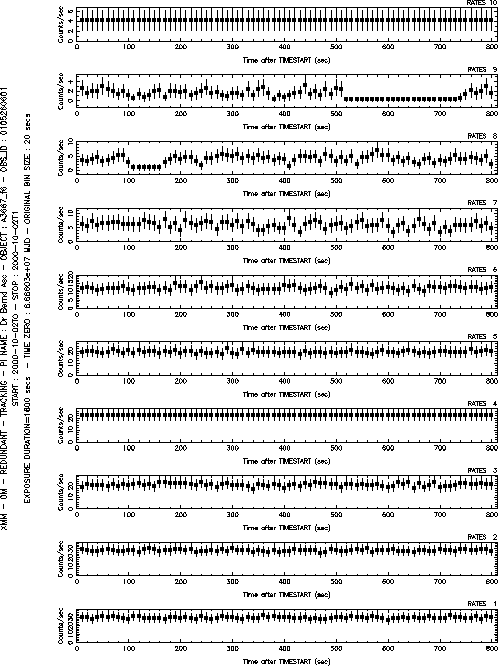

omthlcplot reads the OM tracking history FITS file and then plots the intensity of each star as a time series. omthlcplot is flexible enough to present each time series on a separate page, on several pages or all the time series may be presented on a single page, specified using the parameter nplots. The data can be presented in its original form, or binned up, by a factor given by the user, using the parameter binsize.
The input FITS files, such as those that have ben produced by omthconv, can contain between 1 and 99 rates columns, with equi-spaced time bins. The bin width is given by the keyword TIMEDEL and should be found in the RATES header extension.
Plots give time after TSTART (keyword in the FITS file) on the X-axis against count rates on the Y-axis.
omthlcplot allows the user to input the device type (e.g. Xwindow, Postscript, ...) for the output file.
As described in [1], light curves will be rebinned if necessary to limit the number of plotted data points to 500.
A typical output of omthlcplot can be seen in Figure 1.
|  |